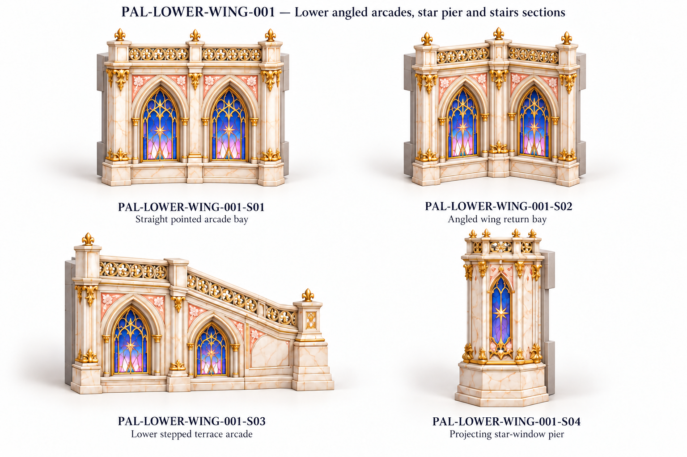
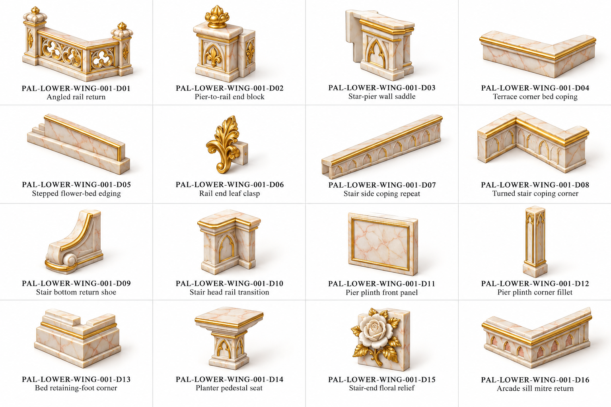
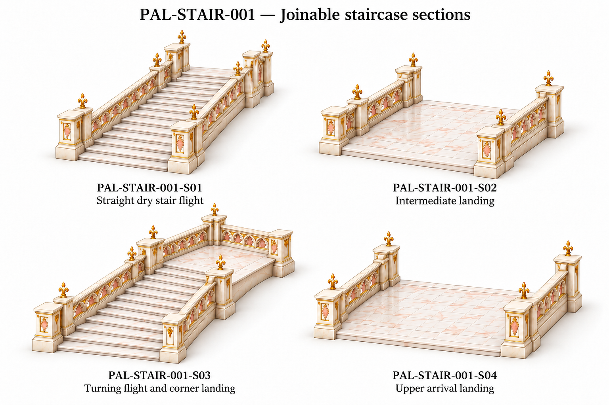
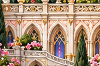
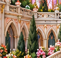
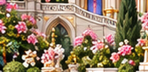
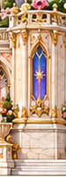
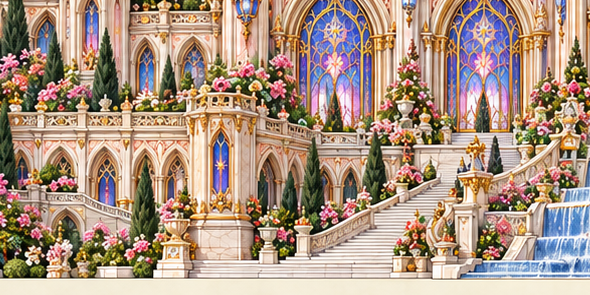

Draft component references. Original front controls visible proportions. No models or verified physical joins.
All families · Assembly/review notes · Part IDs · Source and join schedule
Wall return depth/direction is inferred: S02 shows a concave oblique return, not a verified source plan extrusion. Preserve source front contours when laying out the wing.
S03 stair turning/exit geometry remains a proposed connection; its top railing must be opened at the actual exit when modeled. Flat landing slabs and empty planter seats corrected.
D07/D08 include supporting parapet beneath coping; isolate the upper coping only if generating trim instead of a complete low parapet segment.







